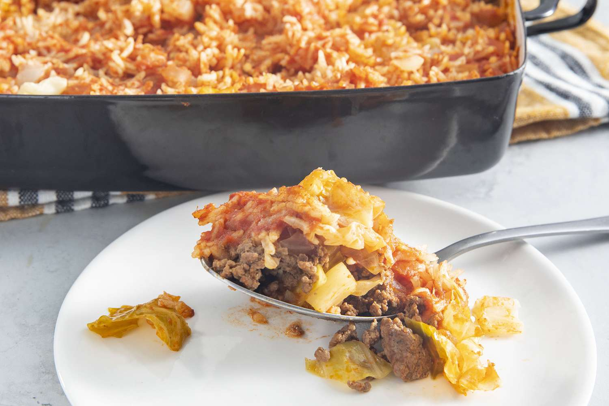

Cabbage Roll Casserole

Description
This cabbage roll casserole has all the ingredients of stuffed cabbage rolls but is a lot easier to make! This basic recipe will apeal to everyone but if you prefer more flavor, consider adding crushed garlic, paprika, thyme, or cayenne pepper.
Ingredients
- 2 pounds ground beef
- 3 1/2 pounds chopped cabbage
- 1 (29 ounce) can tomato sauce
- 1 cup chopped onion
- 1 cup uncooked white rice
- 1 teaspoon salt
- 2 (14 ounce) cans beef broth
Steps
- Preheat the oven to 350 degrees F (175 degrees C).
- Heat a large skillet over medium-high heat. Cook and stir ground beef in the hot skillet until browned and crumbly, 5 to 7 minutes. Drain and discard grease.
- Combine cabbage, tomato sauce, onion, rice, and salt in a large mixing bowl. Stir in cooked ground beef. Pour mixture into a 9x13-inch baking dish, then pour beef broth over top.
- Cover and bake in the preheated oven for 1 hour. Stir, re-cover, and bake until cabbage is tender and rice is done, 20 to 30 minutes more.